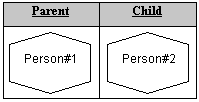
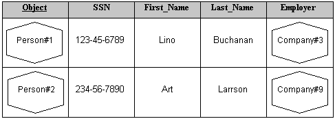

Previous TOC Next
Previous TOC Next 
| ChiMu Documentation Object-Relational Mapping | Previous TOC Next |
| Objects as Tuple | Redundancy and Normalization | Object Attributes as | Behavior | Inheritance | Summary |
Object modeling describes a system through objects that have identity, behavior, and encapsulated state. Relational models describe a system by information. How can a relational model support object modeling? Of the primary object-modeling properties, relational modeling seems to have no way of representing any of them directly. Tuples have neither identity nor encapsulation. Tuple attribute values are encapsulated but are pure values, so they have neither identity nor state. This is what is frequently called an impedance-mismatch between object approaches and relational databases.
Fortunately this is not really the case. Predicate logic is quite good at describing the state of the world (or of a model of the world), so relational databases must be quite good at describing the state of an object model. To see how easily they can model an object model’s state we will first expand the relational model slightly.
What if we allowed Objects (with identity and state) to be tuple attribute values?
|
Instead of simply having a social security number (or even a complex value like a graphic image or a rectangle) as a tuple’s attribute value, we can have a ‘Person’ as a tuple’s attribute value. This would allow us to have a predicate "This person is known to be the parent of this person" instead of saying, "The person with this SSN is known to be the parent of the person with this SSN". We don’t care about a person’s SSN (which might change) or any of the other attributes of a person: we have direct representations of the people themselves. |
 |
This merger provides much flexibility. Anywhere we used to have a primitive or abstract data type we can now have an object. For this to fit with the relational model we will enhance Domains to be able to take their "values" from a pool of existing objects or to be able to create a new object when asked.
Now that we have integrated the relational model and the object model we have the problem "which do we ask?" Do I ask ‘Person#1’ for its child (object approach) or do I ask the Parenthood relation for the children of ‘Person#1’ (the relational approach)? Presumably I can ask both that question, but then how do we make sure changes made to one or the other place are synchronized? We clearly have a severe redundancy (denormalization) problem between objects with attributes and the tuples in relations.
This problem is especially obvious for the basic attribute tables (or Entity table in ER modeling) where every row lists the attributes of an object. Do we ask the object to change its attribute or do we change a row in the table?

Because this is a relational model, the relational features should take precedence: We only want to extend the relational model well enough so we can easily represent objects in it. Because the relational model has a complete approach for changing the state of the database we should not add a second one. So, we do not change the state of an object through the methods of an object, but must instead modify the appropriate relation variables (by adding, removing, or replacing/changing tuples) to cause the desired changes.
Should we allow an object to answer a question about its attributes? That would be convenient. Instead of having to look up in the Parenthood table for parents and the Person table for basic attributes we could instead ask Person#1 for it #firstName and its #parents. From the relational perspective, the person object would provide a centralized view on all the tables that can refer to a person object (i.e. all those tables which have attributes with Domains that can contain a person).
Assuming the notation <Person#1> represents that actual person object, then the query
‘SELECT Person.SSN FROM Person WHERE Person.Object = <Person#1>’
is equivalent to
‘SELECT <Person#1>.SSN’
assuming two things: it is obvious what relation variable (table) controls the SSN attribute for Person and it is obvious which attribute in the relation variable we are starting from (in this case the "Object" attribute). In general this is unlikely, so we probably would need to explicitly define how the attributes of an object are a view on the appropriate relation variables. Something like:
CREATE DOMAIN PERSON CLASS {
ssn AS SELECT SSN FROM Person WHERE Object = THIS
firstName AS SELECT First_Name FROM Person WHERE Object = THIS
parents AS SELECT Parent FROM Parenthood WHERE Child = THIS
children AS SELECT Child FROM Parenthood WHERE Parent = THIS
}
Where we added the ability to declare a domain which will have objects with identity as its values (a CLASS), the ability to declare attributes of that class as views on the database, and the new keyword THIS to refer to whichever object we are currently dealing with. Under the covers these views could be significantly optimized which would give the same performance advantage for traversals as an object database.
SELECT children.firstName
FROM Person.Object as Parent, Parent.children as children
WHERE Parent.firstName = ‘ART’ "
To add object behavior requires the ability to specify method implementations for any given object. Something like:
CREATE DOMAIN PERSON CLASS {
setName(newName : String) AS UPDATE ... WHERE Object = THIS
}
Discussing behavioral additions is beyond the scope of this document. So far we have all the capabilities required for an information modeling and storage system, and added behavior could be easily added to objects, tables, or the database as a whole. Effectively these are the three "types" of objects that could have behavior within our object-relational system.
Type based inheritance can be used as part of integrity constraints. When we specify that a domain is of a particular type, this would only allow objects that implement that type or any conformant subtype to be values in that domain. This allows similar flexibility and integrity as for a type based programming language. For example, if we have the two classes:
CREATE DOMAIN PERSON CLASS {...}
CREATE DOMAIN EMPLOYEE CLASS EXTENDS PERSON {...}
Then object from either class can be the value of an attribute of type PERSON. We know that the object will at least support the PERSON interface although some may additionally support the EMPLOYEE interface.
Class based inheritance can be used to ease the creation of classes by having subclasses inherit the attributes and behavior of the superclass.
What about inheriting among tables? Inheriting among tables is not inheritance at all; it is just multi-relation compression and management. Tables are related by having common attributes (columns and domains) and by having common predicates. Table "inheritance" (compression) does not affect whether the tables are related or not, it is just a simple way to implement possibly related tables. In that sense it is close to class inheritance, but there is no reason to overload the term "inheritance" with this distant a meaning.
This chapter has presented a correct integration of objects into the relational model. These objects have identity, which is the foundation for the true integration of object modeling. Objects can also have attributes and behavior, but these properties must be in terms of the truth statements and predicates that are the foundation of the relational model. Attributes are read from relational expressions and state modifying behavior must alter the state of relation variables in the database. The two models are merged and enables us to have the convenience of object notation with the expressive power of predicate logic.
 |
Previous TOC Next | |
| Copyright (c) 1997, ChiMu Corporation. All Rights Reserved.
Confidential and Proprietary. Version R1.0.1. |